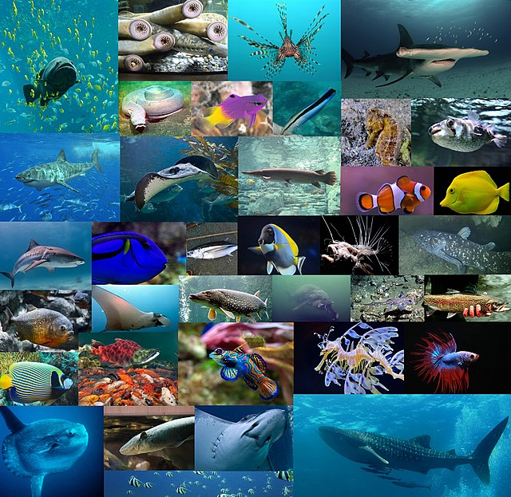

¿QUE SON LOS PECES?
Los peces son animales vertebrados marinos, abundantes y diversos en los distintos océanos, lagos y ríos de nuestro planeta. Muchos de ellos forman parte de la dieta de la humanidad, mientras que otros pueden llegar a ser animales de compañía. Se trata de especies de animales eucariontes.
